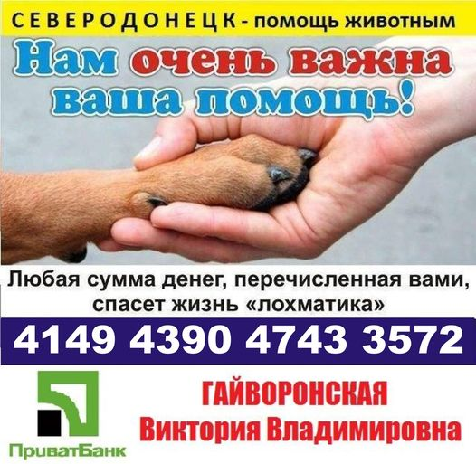

Как помочь?
Группа "Северодонецк - животным поможем вместе" - это объединение волонтеров и всех неравнодушных людей, которые много лет помогают бездомным животным города и региона и максимально пытаются уменьшить количество бездомышей путем их стерилизации и пристройства в хорошие руки.
Если Вы хотите оказать финансовую помощь, то обязательно свяжитесь с волонтерами. Волонтеры Вам предоставят все финансовые отчетности, на что конкретно ушла Ваша помощь. Сотрудники приюта не являются волонтерами, поэтому к благотворительности они отношения не имеют.
В ПРИЮТЕ ВСЕГДА НУЖНЫ:
– Консервы для собак, которые необходимы собакам после операций, т.к. в этих ситуациях сухой корм им противопоказан, гречка. Для некоторых животных нужен специализированный корм. По вопросам корма нужно предварительно созвониться с волонтерами.
– Шерстяные и полушерстяные пледы и одеяла (используются для утепления полок для животных). НЕ куртки, НЕ пальто!
– Полотенца, простыни, пододеяльники, наволочки (они используются после мытья животных, при проведении стерилизации) – чистые, постиранные. Можно ветхие, не глаженые.
– Лежанки для кошек (домики, коврики, подушечки), когтеточки для кошек и игрушки для собак и кошек.
– Средства для обработки от блох, глистогонные средства (нужны иногда, перед покупкой нужно созвониться с волонтерами и узнать о необходимости).
– Поводки (3 и 5м брезентовые), шлейки на средних и больших собак.